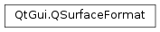

QSurfaceFormat¶
Synopsis¶
Functions¶
- def
__eq__(, arg__2) - def
__ne__(, arg__2) - def
alphaBufferSize() - def
blueBufferSize() - def
colorSpace() - def
depthBufferSize() - def
greenBufferSize() - def
hasAlpha() - def
majorVersion() - def
minorVersion() - def
options() - def
profile() - def
redBufferSize() - def
renderableType() - def
samples() - def
setAlphaBufferSize(size) - def
setBlueBufferSize(size) - def
setColorSpace(colorSpace) - def
setDepthBufferSize(size) - def
setGreenBufferSize(size) - def
setMajorVersion(majorVersion) - def
setMinorVersion(minorVersion) - def
setOption(opt) - def
setOption(option[, on=true]) - def
setOptions(options) - def
setProfile(profile) - def
setRedBufferSize(size) - def
setRenderableType(type) - def
setSamples(numSamples) - def
setStencilBufferSize(size) - def
setStereo(enable) - def
setSwapBehavior(behavior) - def
setSwapInterval(interval) - def
setVersion(major, minor) - def
stencilBufferSize() - def
stereo() - def
swapBehavior() - def
swapInterval() - def
testOption(opt) - def
testOption(option) - def
version()
Static functions¶
- def
defaultFormat() - def
setDefaultFormat(format)
Detailed Description¶
The
PySide2.QtGui.QSurfaceFormatclass represents the format of aPySide2.QtGui.QSurface.The format includes the size of the color buffers, red, green, and blue; the size of the alpha buffer; the size of the depth and stencil buffers; and number of samples per pixel for multisampling. In addition, the format contains surface configuration parameters such as
OpenGLprofile and version for rendering, whether or not to enable stereo buffers, and swap behaviour.Note
When troubleshooting context or window format issues, it can be helpful to enable the logging category
qt.qpa.gl. Depending on the platform, this may print useful debug information when it comes toOpenGLinitialization and the native visual or framebuffer configurations whichPySide2.QtGui.QSurfaceFormatgets mapped to.
-
class
PySide2.QtGui.QSurfaceFormat¶ -
class
PySide2.QtGui.QSurfaceFormat(options) -
class
PySide2.QtGui.QSurfaceFormat(other) Parameters: - options –
PySide2.QtGui.QSurfaceFormat.FormatOptions - other –
PySide2.QtGui.QSurfaceFormat
Constructs a default initialized
PySide2.QtGui.QSurfaceFormat.Note
By default
OpenGL2.0 is requested since this provides the highest grade of portability between platforms andOpenGLimplementations.Constructs a
PySide2.QtGui.QSurfaceFormatwith the given formatoptions.Constructs a copy of
other.- options –
-
PySide2.QtGui.QSurfaceFormat.FormatOption¶ This enum contains format options for use with
PySide2.QtGui.QSurfaceFormat.Constant Description QSurfaceFormat.StereoBuffers Used to request stereo buffers in the surface format. QSurfaceFormat.DebugContext Used to request a debug context with extra debugging information. QSurfaceFormat.DeprecatedFunctions Used to request that deprecated functions be included in the OpenGLcontext profile. If not specified, you should get a forward compatible context without support functionality marked as deprecated. This requiresOpenGLversion 3.0 or higher.QSurfaceFormat.ResetNotification Enables notifications about resets of the OpenGLcontext. The status is then queryable via the context’sPySide2.QtGui.QOpenGLContext.isValid()function. Note that not setting this flag does not guarantee that context state loss never occurs. Additionally, some implementations may choose to report context loss regardless of this flag.
-
PySide2.QtGui.QSurfaceFormat.SwapBehavior¶ This enum is used by
PySide2.QtGui.QSurfaceFormatto specify the swap behaviour of a surface. The swap behaviour is mostly transparent to the application, but it affects factors such as rendering latency and throughput.Constant Description QSurfaceFormat.DefaultSwapBehavior The default, unspecified swap behaviour of the platform. QSurfaceFormat.SingleBuffer Used to request single buffering, which might result in flickering when OpenGLrendering is done directly to screen without an intermediate offscreen buffer.QSurfaceFormat.DoubleBuffer This is typically the default swap behaviour on desktop platforms, consisting of one back buffer and one front buffer. Rendering is done to the back buffer, and then the back buffer and front buffer are swapped, or the contents of the back buffer are copied to the front buffer, depending on the implementation. QSurfaceFormat.TripleBuffer This swap behaviour is sometimes used in order to decrease the risk of skipping a frame when the rendering rate is just barely keeping up with the screen refresh rate. Depending on the platform it might also lead to slightly more efficient use of the GPU due to improved pipelining behaviour. Triple buffering comes at the cost of an extra frame of memory usage and latency, and might not be supported depending on the underlying platform.
-
PySide2.QtGui.QSurfaceFormat.RenderableType¶ This enum specifies the rendering backend for the surface.
Constant Description QSurfaceFormat.DefaultRenderableType The default, unspecified rendering method QSurfaceFormat.OpenGL Desktop rendering QSurfaceFormat.OpenGLES ES 2.0 rendering QSurfaceFormat.OpenVG Open Vector Graphics rendering
-
PySide2.QtGui.QSurfaceFormat.OpenGLContextProfile¶ This enum is used to specify the
OpenGLcontext profile, in conjunction withQSurfaceFormat.setMajorVersion()andQSurfaceFormat.setMinorVersion().Profiles are exposed in
OpenGL3.2 and above, and are used to choose between a restricted core profile, and a compatibility profile which might contain deprecated support functionality.Note that the core profile might still contain functionality that is deprecated and scheduled for removal in a higher version. To get access to the deprecated functionality for the core profile in the set
OpenGLversion you can use thePySide2.QtGui.QSurfaceFormatformat optionQSurfaceFormat.DeprecatedFunctions.Constant Description QSurfaceFormat.NoProfile OpenGLversion is lower than 3.2. For 3.2 and newer this is same as .QSurfaceFormat.CoreProfile Functionality deprecated in OpenGLversion 3.0 is not available.QSurfaceFormat.CompatibilityProfile Functionality from earlier OpenGLversions is available.
-
PySide2.QtGui.QSurfaceFormat.ColorSpace¶ This enum is used to specify the preferred color space, controlling if the window’s associated default framebuffer is able to do updates and blending in a given encoding instead of the standard linear operations.
Constant Description QSurfaceFormat.DefaultColorSpace The default, unspecified color space. QSurfaceFormat.sRGBColorSpace When GL_ARB_framebuffer_sRGBorGL_EXT_framebuffer_sRGBis supported by the platform and this value is set, the window will be created with an sRGB-capable default framebuffer. Note that some platforms may return windows with a sRGB-capable default framebuffer even when not requested explicitly.
Note
This enum was introduced in Qt 5.10.
-
PySide2.QtGui.QSurfaceFormat.alphaBufferSize()¶ Return type: PySide2.QtCore.intGet the size in bits of the alpha channel of the color buffer.
-
PySide2.QtGui.QSurfaceFormat.blueBufferSize()¶ Return type: PySide2.QtCore.intGet the size in bits of the blue channel of the color buffer.
-
PySide2.QtGui.QSurfaceFormat.colorSpace()¶ Return type: PySide2.QtGui.QSurfaceFormat.ColorSpaceReturns the color space.
-
static
PySide2.QtGui.QSurfaceFormat.defaultFormat()¶ Return type: PySide2.QtGui.QSurfaceFormatReturns the global default surface format.
When
PySide2.QtGui.QSurfaceFormat.setDefaultFormat()is not called, this is a default-constructedPySide2.QtGui.QSurfaceFormat.
-
PySide2.QtGui.QSurfaceFormat.depthBufferSize()¶ Return type: PySide2.QtCore.intReturns the depth buffer size.
-
PySide2.QtGui.QSurfaceFormat.greenBufferSize()¶ Return type: PySide2.QtCore.intGet the size in bits of the green channel of the color buffer.
-
PySide2.QtGui.QSurfaceFormat.hasAlpha()¶ Return type: PySide2.QtCore.boolReturns
trueif the alpha buffer size is greater than zero.This means that the surface might be used with per pixel translucency effects.
-
PySide2.QtGui.QSurfaceFormat.majorVersion()¶ Return type: PySide2.QtCore.intReturns the major
OpenGLversion.The default version is 2.0.
-
PySide2.QtGui.QSurfaceFormat.minorVersion()¶ Return type: PySide2.QtCore.intReturns the minor
OpenGLversion.
-
PySide2.QtGui.QSurfaceFormat.__ne__(arg__2)¶ Parameters: arg__2 – PySide2.QtGui.QSurfaceFormatReturn type: PySide2.QtCore.bool
-
PySide2.QtGui.QSurfaceFormat.__eq__(arg__2)¶ Parameters: arg__2 – PySide2.QtGui.QSurfaceFormatReturn type: PySide2.QtCore.bool
-
PySide2.QtGui.QSurfaceFormat.options()¶ Return type: PySide2.QtGui.QSurfaceFormat.FormatOptionsReturns the currently set format options.
-
PySide2.QtGui.QSurfaceFormat.profile()¶ Return type: PySide2.QtGui.QSurfaceFormat.OpenGLContextProfileGet the configured
OpenGLcontext profile.This setting is ignored if the requested
OpenGLversion is less than 3.2.
-
PySide2.QtGui.QSurfaceFormat.redBufferSize()¶ Return type: PySide2.QtCore.intGet the size in bits of the red channel of the color buffer.
-
PySide2.QtGui.QSurfaceFormat.renderableType()¶ Return type: PySide2.QtGui.QSurfaceFormat.RenderableTypeGets the renderable type.
Chooses between desktop
OpenGL,OpenGLES, andOpenVG.
-
PySide2.QtGui.QSurfaceFormat.samples()¶ Return type: PySide2.QtCore.intReturns the number of samples per pixel when multisampling is enabled. By default, multisampling is disabled.
-
PySide2.QtGui.QSurfaceFormat.setAlphaBufferSize(size)¶ Parameters: size – PySide2.QtCore.intSet the desired
sizein bits of the alpha channel of the color buffer.
-
PySide2.QtGui.QSurfaceFormat.setBlueBufferSize(size)¶ Parameters: size – PySide2.QtCore.intSet the desired
sizein bits of the blue channel of the color buffer.Note
On Mac OSX, be sure to set the buffer size of all color channels, otherwise this setting will have no effect. If one of the buffer sizes is not set, the current bit-depth of the screen is used.
-
PySide2.QtGui.QSurfaceFormat.setColorSpace(colorSpace)¶ Parameters: colorSpace – PySide2.QtGui.QSurfaceFormat.ColorSpaceSets the preferred
colorSpace.For example, this allows requesting windows with default framebuffers that are sRGB-capable on platforms that support it.
Note
When the requested color space is not supported by the platform, the request is ignored. Query the
PySide2.QtGui.QSurfaceFormatafter window creation to verify if the color space request could be honored or not.Note
This setting controls if the default framebuffer of the window is capable of updates and blending in a given color space. It does not change applications’ output by itself. The applications’ rendering code will still have to opt in via the appropriate
OpenGLcalls to enable updates and blending to be performed in the given color space instead of using the standard linear operations.
-
static
PySide2.QtGui.QSurfaceFormat.setDefaultFormat(format)¶ Parameters: format – PySide2.QtGui.QSurfaceFormatSets the global default surface
format.This format is used by default in
PySide2.QtGui.QOpenGLContext,PySide2.QtGui.QWindow,PySide2.QtWidgets.QOpenGLWidgetand similar classes.It can always be overridden on a per-instance basis by using the class in question’s own setFormat() function. However, it is often more convenient to set the format for all windows once at the start of the application. It also guarantees proper behavior in cases where shared contexts are required, because settings the format via this function guarantees that all contexts and surfaces, even the ones created internally by Qt, will use the same format.
Note
When setting
Qt.AA_ShareOpenGLContexts, it is strongly recommended to place the call to this function before the construction of thePySide2.QtGui.QGuiApplicationorPySide2.QtWidgets.QApplication. Otherwiseformatwill not be applied to the global share context and therefore issues may arise with context sharing afterwards.
-
PySide2.QtGui.QSurfaceFormat.setDepthBufferSize(size)¶ Parameters: size – PySide2.QtCore.intSet the minimum depth buffer size to
size.
-
PySide2.QtGui.QSurfaceFormat.setGreenBufferSize(size)¶ Parameters: size – PySide2.QtCore.intSet the desired
sizein bits of the green channel of the color buffer.Note
On Mac OSX, be sure to set the buffer size of all color channels, otherwise this setting will have no effect. If one of the buffer sizes is not set, the current bit-depth of the screen is used.
-
PySide2.QtGui.QSurfaceFormat.setMajorVersion(majorVersion)¶ Parameters: majorVersion – PySide2.QtCore.intSets the desired
majorOpenGLversion.
-
PySide2.QtGui.QSurfaceFormat.setMinorVersion(minorVersion)¶ Parameters: minorVersion – PySide2.QtCore.intSets the desired
minorOpenGLversion.The default version is 2.0.
-
PySide2.QtGui.QSurfaceFormat.setOption(option[, on=true])¶ Parameters: - option –
PySide2.QtGui.QSurfaceFormat.FormatOption - on –
PySide2.QtCore.bool
Sets the format option
optionifonis true; otherwise, clears the option.- option –
-
PySide2.QtGui.QSurfaceFormat.setOption(opt) Parameters: opt – PySide2.QtGui.QSurfaceFormat.FormatOptionsThis is an overloaded function.
Use
PySide2.QtGui.QSurfaceFormat.setOption()(QSurfaceFormat.FormatOption, bool) orPySide2.QtGui.QSurfaceFormat.setOptions()instead.Sets the format options to the OR combination of
optand the current format options.
-
PySide2.QtGui.QSurfaceFormat.setOptions(options)¶ Parameters: options – PySide2.QtGui.QSurfaceFormat.FormatOptionsSets the format options to
options.
-
PySide2.QtGui.QSurfaceFormat.setProfile(profile)¶ Parameters: profile – PySide2.QtGui.QSurfaceFormat.OpenGLContextProfileSets the desired
OpenGLcontextprofile.This setting is ignored if the requested
OpenGLversion is less than 3.2.
-
PySide2.QtGui.QSurfaceFormat.setRedBufferSize(size)¶ Parameters: size – PySide2.QtCore.intSet the desired
sizein bits of the red channel of the color buffer.Note
On Mac OSX, be sure to set the buffer size of all color channels, otherwise this setting will have no effect. If one of the buffer sizes is not set, the current bit-depth of the screen is used.
-
PySide2.QtGui.QSurfaceFormat.setRenderableType(type)¶ Parameters: type – PySide2.QtGui.QSurfaceFormat.RenderableTypeSets the desired renderable
type.Chooses between desktop
OpenGL,OpenGLES, andOpenVG.
-
PySide2.QtGui.QSurfaceFormat.setSamples(numSamples)¶ Parameters: numSamples – PySide2.QtCore.intSet the preferred number of samples per pixel when multisampling is enabled to
numSamples. By default, multisampling is disabled.
-
PySide2.QtGui.QSurfaceFormat.setStencilBufferSize(size)¶ Parameters: size – PySide2.QtCore.intSet the preferred stencil buffer size to
sizebits.
-
PySide2.QtGui.QSurfaceFormat.setStereo(enable)¶ Parameters: enable – PySide2.QtCore.boolIf
enableis true enables stereo buffering; otherwise disables stereo buffering.Stereo buffering is disabled by default.
Stereo buffering provides extra color buffers to generate left-eye and right-eye images.
-
PySide2.QtGui.QSurfaceFormat.setSwapBehavior(behavior)¶ Parameters: behavior – PySide2.QtGui.QSurfaceFormat.SwapBehaviorSet the swap
behaviorof the surface.The swap behavior specifies whether single, double, or triple buffering is desired. The default,
DefaultSwapBehavior, gives the default swap behavior of the platform.
-
PySide2.QtGui.QSurfaceFormat.setSwapInterval(interval)¶ Parameters: interval – PySide2.QtCore.intSets the preferred swap interval. The swap interval specifies the minimum number of video frames that are displayed before a buffer swap occurs. This can be used to sync the GL drawing into a window to the vertical refresh of the screen.
Setting an
intervalvalue of 0 will turn the vertical refresh syncing off, any value higher than 0 will turn the vertical syncing on. Settingintervalto a higher value, for example 10, results in having 10 vertical retraces between every buffer swap.The default interval is 1.
Changing the swap interval may not be supported by the underlying platform. In this case, the request will be silently ignored.
-
PySide2.QtGui.QSurfaceFormat.setVersion(major, minor)¶ Parameters: - major –
PySide2.QtCore.int - minor –
PySide2.QtCore.int
Sets the desired
majorandminorOpenGLversions.The default version is 2.0.
- major –
-
PySide2.QtGui.QSurfaceFormat.stencilBufferSize()¶ Return type: PySide2.QtCore.intReturns the stencil buffer size in bits.
-
PySide2.QtGui.QSurfaceFormat.stereo()¶ Return type: PySide2.QtCore.boolReturns
trueif stereo buffering is enabled; otherwise returns false. Stereo buffering is disabled by default.
-
PySide2.QtGui.QSurfaceFormat.swapBehavior()¶ Return type: PySide2.QtGui.QSurfaceFormat.SwapBehaviorReturns the configured swap behaviour.
-
PySide2.QtGui.QSurfaceFormat.swapInterval()¶ Return type: PySide2.QtCore.intReturns the swap interval.
-
PySide2.QtGui.QSurfaceFormat.testOption(option)¶ Parameters: option – PySide2.QtGui.QSurfaceFormat.FormatOptionReturn type: PySide2.QtCore.boolReturns true if the format option
optionis set; otherwise returns false.
-
PySide2.QtGui.QSurfaceFormat.testOption(opt) Parameters: opt – PySide2.QtGui.QSurfaceFormat.FormatOptionsReturn type: PySide2.QtCore.boolThis is an overloaded function.
Use
PySide2.QtGui.QSurfaceFormat.testOption()(QSurfaceFormat.FormatOption) instead.Returns
trueif any of the options inoptis currently set on this object; otherwise returns false.
-
PySide2.QtGui.QSurfaceFormat.version()¶ Return type: Returns a
QPair<int, int> representing theOpenGLversion.Useful for version checks, for example format. >=
qMakePair()(3, 2)
© 2018 The Qt Company Ltd. Documentation contributions included herein are the copyrights of their respective owners. The documentation provided herein is licensed under the terms of the GNU Free Documentation License version 1.3 as published by the Free Software Foundation. Qt and respective logos are trademarks of The Qt Company Ltd. in Finland and/or other countries worldwide. All other trademarks are property of their respective owners.